Technology
"How does it work?"
The software and automation behind production.
Redesigning the website of an automated parts manufacturer.
Designed for Aether MFG. Technology, Services and Industries now live at Beskar.
Visit beskar.co ↗Overview
Aether made precision parts with its own software and automated factories. The old website had the information, but it was hard to follow.
I was the only designer, responsible for research, site structure, visual direction and the front end, with weekly reviews alongside the founders and engineering.
The vision
Aether planned to grow by copying one factory design, starting in Erie, PA, then across the US and abroad. Competitors show catalogs and stock photos. I drew Aether's plan as a blueprint map, so visitors could see where the company was heading.
The challenge
Visitors wanted to know what Aether makes, how it works and whether it can make their part. The old site tried to answer all of it in one place.
After reviewing Xometry, Protolabs and Fictiv and talking with the team, I reordered the content around those questions.
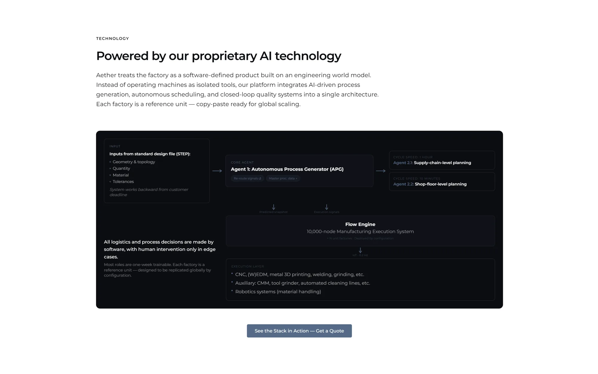
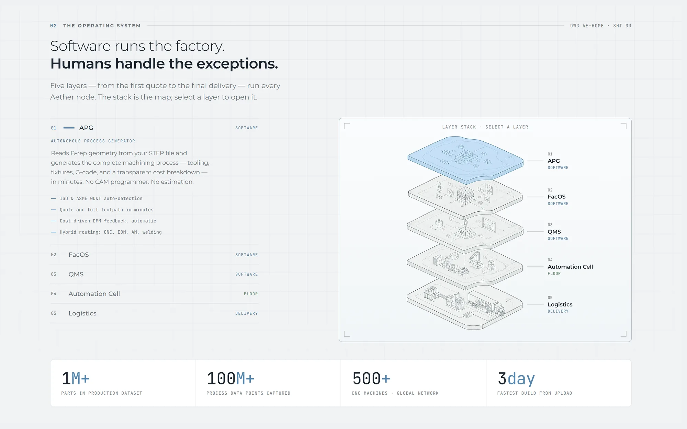
BeforeRedesignDrag to compare · Technology section, before and after
Information architecture
Each page answers one question, so the detail sits where people look for it.
"How does it work?"
The software and automation behind production.
"Can you make my part?"
Processes, materials, tolerances and finishes.
"Do you work in my field?"
Parts grouped by sector. Added at Beskar.
Technology
Aether's product was a stack of five software and hardware layers. I designed it as one object that opens layer by layer, and gave each product a short demo.
Services
Engineers look for numbers first. I put capabilities, materials, tolerances and finishes on one scannable page, with photos of parts made on Aether's floor.
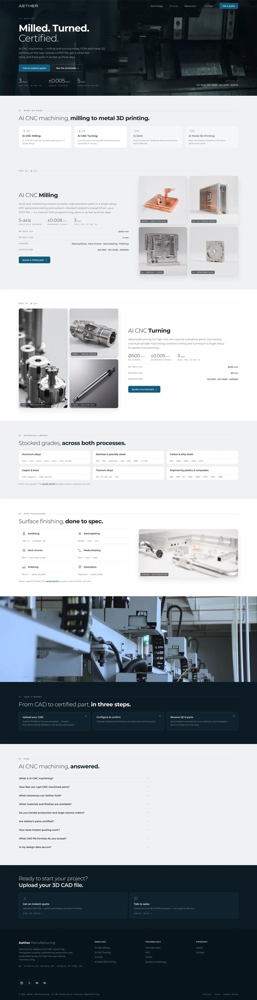
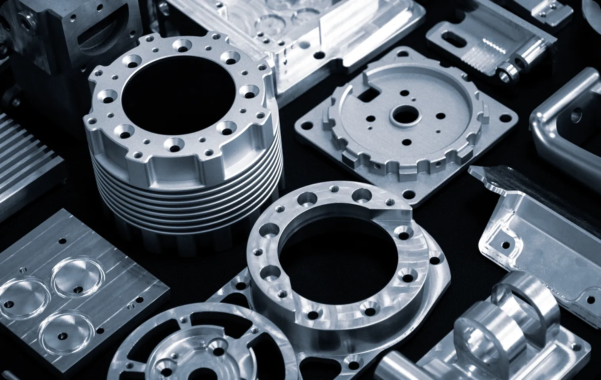
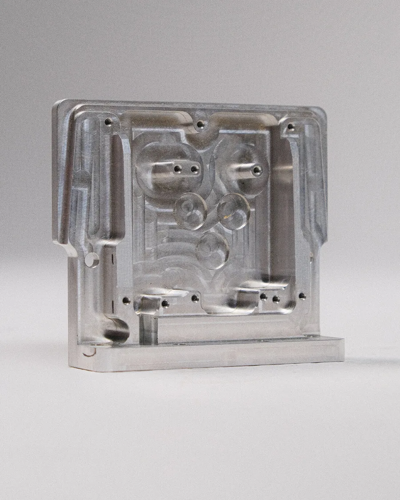
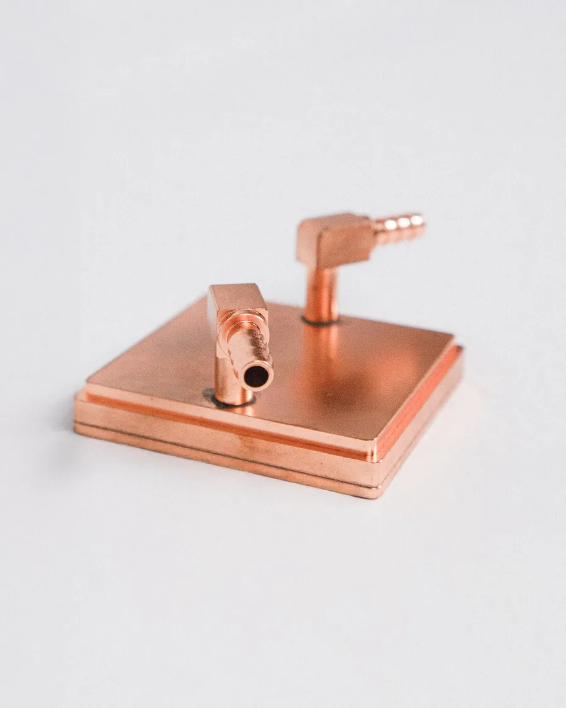
Industries · added at Beskar
After the move to Beskar, customers said they couldn't tell what the company makes. I designed an Industries menu with image previews and one page template built around real parts.
Beskar's developer shipped it and has since added two more sectors.
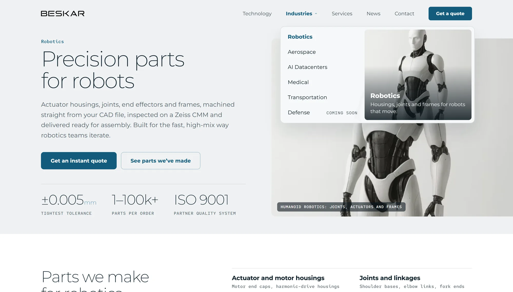
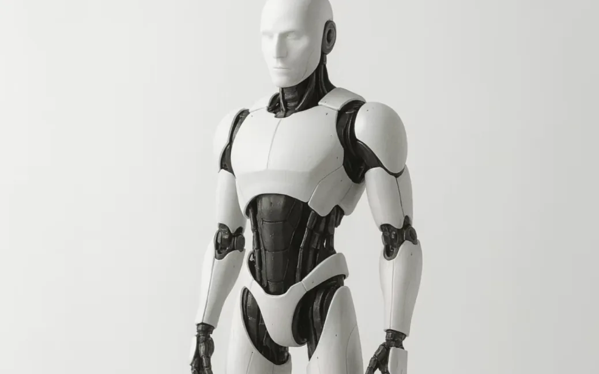
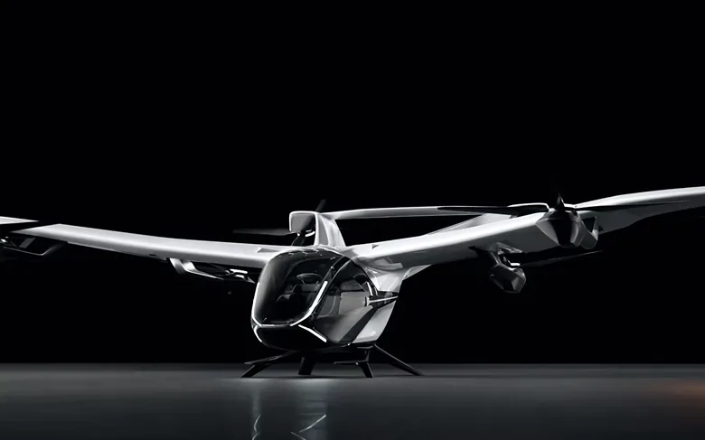
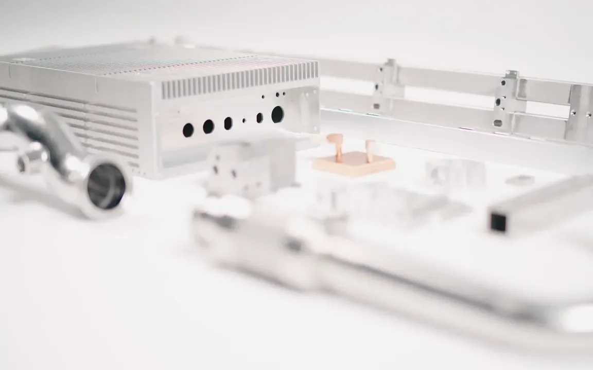
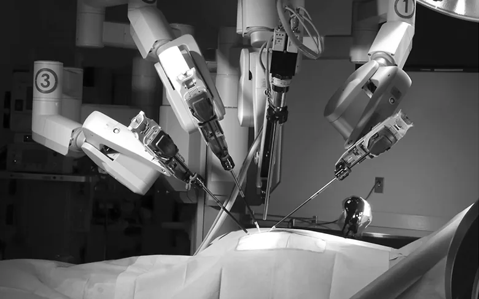
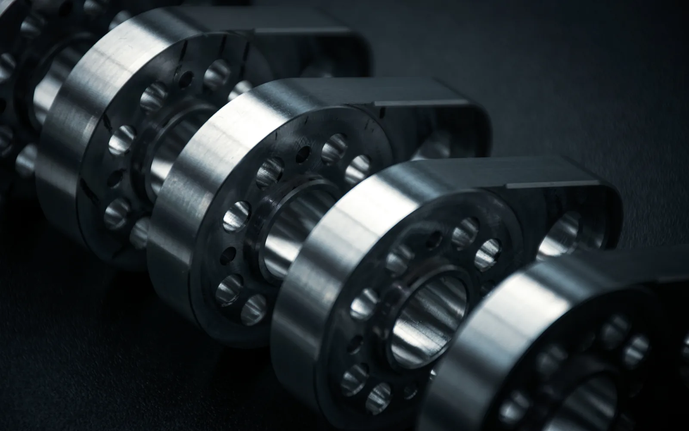
Design to code
I built the responsive front end myself in HTML, CSS and JavaScript. We reviewed the live build every week, which made feedback quicker.
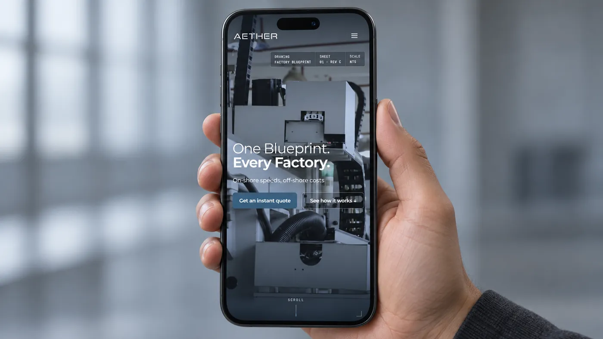
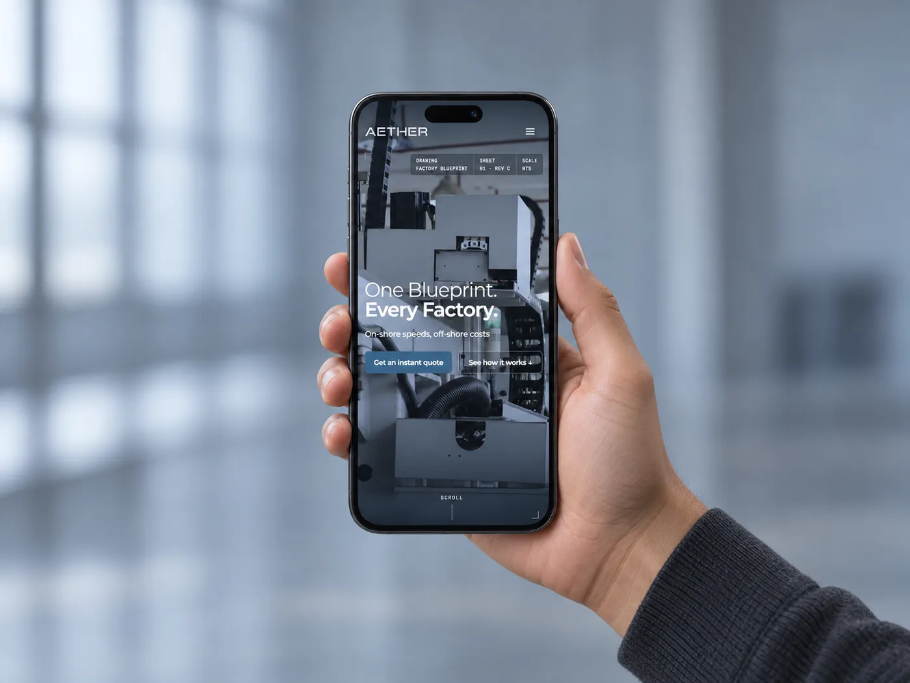
Visual language
The blueprint gave the site its details: mono labels, sheet numbers, dimension lines. On the other pages I set them on light surfaces with one teal accent, closer to a clean factory floor.
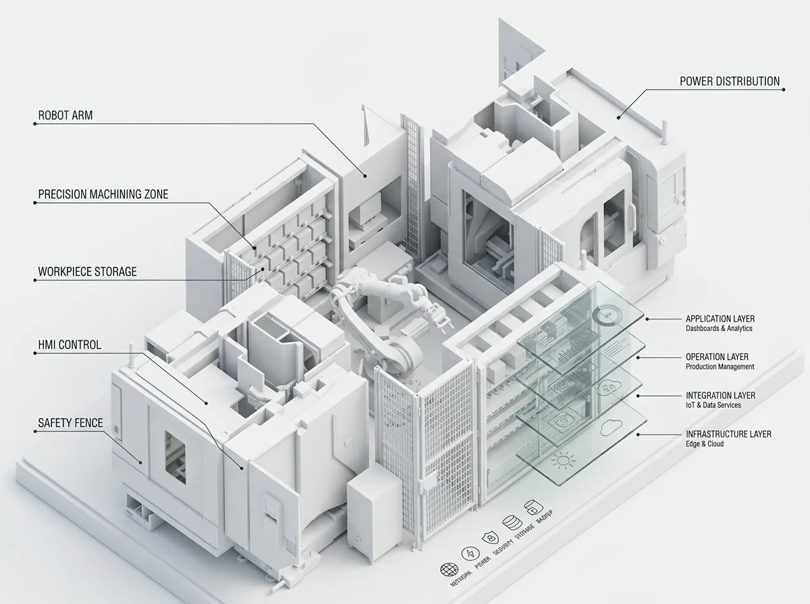
Bar widths show how much each colour is used.
Outcome
When Aether's founders split, the team moved to Beskar and took the site with them. Beskar kept Technology and Services and dropped the Aether homepage.
Images show my original Aether work.